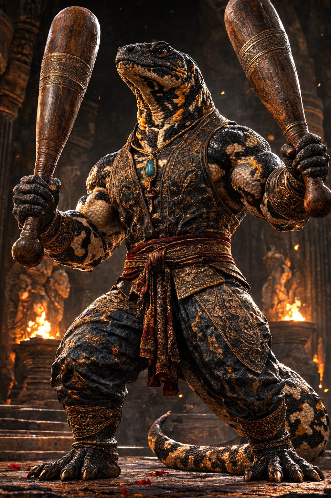

Kaiser's Spotted Newt
Neurergus kaiseri
Region: Iran
Habitat: Mountain streams, rocky freshwater channels and humid upland environments
Martial Representation: Pahlevani
The Kaiser's Spotted Newt embodies ritual strength, disciplined force and noble close-range power. Compact yet imposing, it thrives through body control, committed impact and a warrior's sense of structure. In combat, it favors powerful exchanges, rooted posture and sustained physical authority rather than evasive finesse.
Martial Discipline Overview
Pahlevani is a traditional Persian martial discipline associated with strength, wrestling culture and ritual physical training. It emphasizes power, posture, endurance and honorable physical mastery, often linked to club training and structured body development. Within WAFT, it enhances attack, technique and forceful close-to-mid range pressure.
Combat Attributes
Combat Abilities
Passive Ability
Aposematic Signal
Whenever Kaiser’s Spotted Newt takes damage, it reduces one random stat of the opponent by 20% for 1 turn.
Special Attack
Aposematic Display
If attacked, it applies two stat reductions, inflicts Poison, and blocks the opponent’s Concentration on the following turn.
Poison: deals 10 damage per turn for 3 turns.
If not attacked, Kaiser’s Spotted Newt restores 30 Life and 30 Mana instead.
Ultimate Charge: Defensive (3 hits)